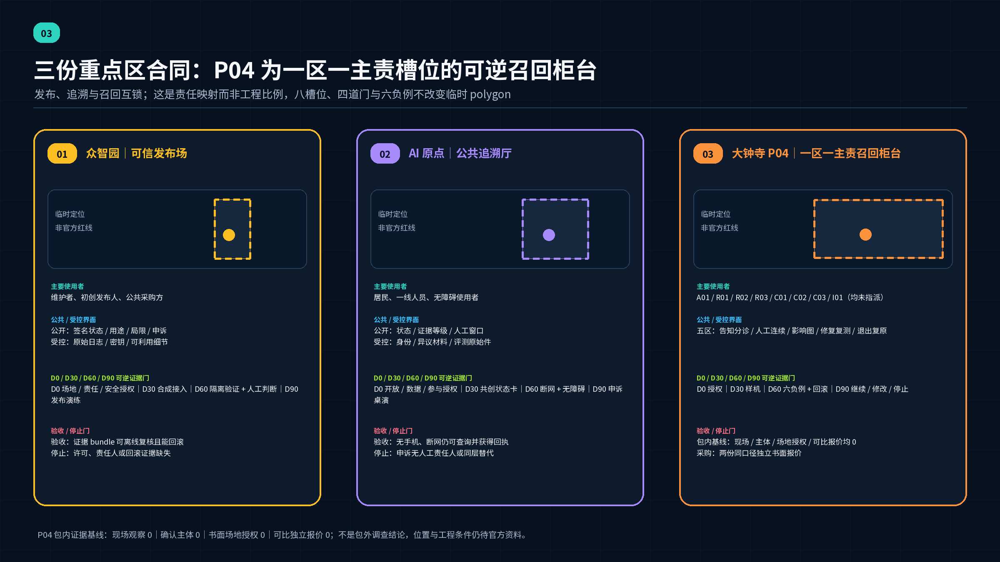
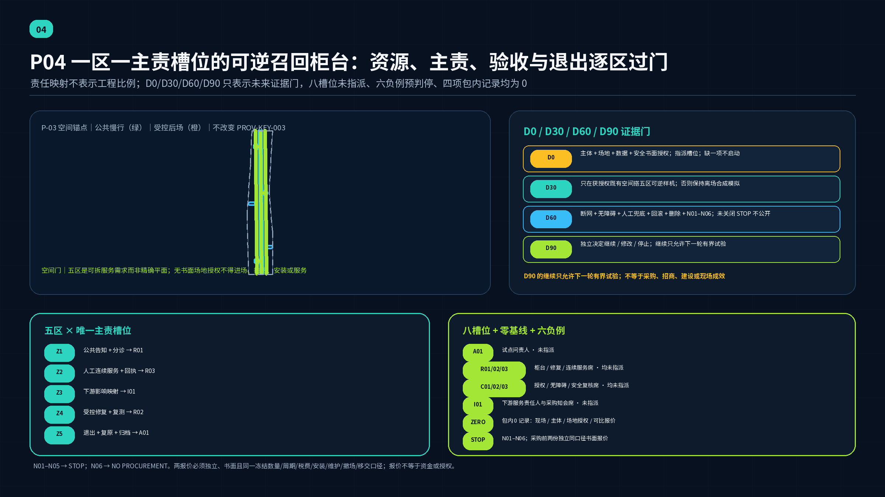
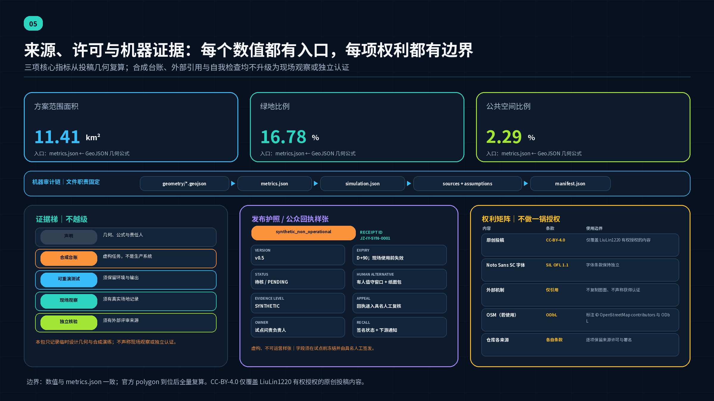

京张开源验真场：城市 AI 可信发布、召回与公共学习基础设施
以一条待官方边界与公共可达性核验的生命周期廊道串联可信发布场、公共追溯厅与召回服务交换站，把城市 AI 制品从来源登记、隔离验证、签名发布、运行观察到协调披露、召回、人工兜底和公共学习的全生命周期转化为可见、可参与、可退出的城市基础设施。
京张开源验真场：城市 AI 可信发布、召回与公共学习基础设施

本方案不再把“AI 治理”理解为一座封闭的后台中心，而把一个经常被忽略的问题放到城市公共界面：当模型、Agent、MCP 服务、插件或机器人固件进入城市服务后，公众和运营者如何知道它从哪里来、依赖什么、获准做什么、出现问题会影响谁、怎样暂停和召回，以及机器不可用时人如何继续提供服务。答案是一条南北向的“验真—运行—召回”公共链：众智园承担可信发布，北京 AI 原点社区承担公共追溯，大钟寺承担召回与服务交换；中关村科技服务翼提供许可、合规和维护者支持，小月河场景赋能翼提供低风险日常测试。生命周期步道优先借助经核验的京张铁路遗址公园公共空间；若官方边界与可达性不支持，则迁入总体设计范围内经核验的公共慢行网络，把遗址公园保留为外部联系与文化叙事，而不是强行移动官方边界。
v0.5 审计焦点｜P04 一区一主责槽位的可逆召回服务柜台。 五个服务区逐区只绑定一个主责槽位，八个带编号角色槽位都是待未来书面接受的职能，不是已任命的个人或已确认的组织 指标 指标。截至 2026-08-21，本包内可核验现场观察记录、已确认责任主体记录和书面场地授权记录均为
0；这是投稿包证据计数，不是对包外现实的调查结论 指标 指标 指标。未来只按 D0、D30、D60、D90 四道证据门和六个负例推进；采购门还须两份同口径独立书面报价，而本包可比报价记录仍为0指标 指标 指标。
设计依据与资料清单
项目名称、三层范围、三处重点区、约面积与专业任务以官方公告为依据；智能体的六项任务、三大定位、五大功能、“三区两翼”、场景数量和开放共创边界以 Agent 任务书为依据 来源 来源。仓库 brief/site-package/ 提供本投稿使用的 schema、枚举、清权本地参考与缺资料边界，但不会把其中任何 provisional 数据升级为 official 证据 来源。data/source_registry.json 是资料权限的判别入口：正式任务资料、背景资料和 provisional-only 几何不能互相替代 来源。
当前没有可验证坐标系的 official boundary 或三处 official key-area polygon。提交中的 SITE-001 与 PROV-KEY-001/002/003 是仓库维护者依据文字四至、南北顺序和约面积形成的临时粗略几何，只用于概念定位、离线图示、临时复算和投稿自检；它们不是官方红线、控规、地块边界、精确站位或工程线位。尤其是 PROV-KEY-003 不能证明大钟寺片区与地铁站、路口四象限或具体地块的准确关系 来源 来源。
一个社区复核 Issue 报告：PROV-SITE-001 与 OSM 已测绘的京张铁路遗址公园相交覆盖率为 0%，最近距离为 412.5 m；作者同时明确说明 OSM 可能只覆盖已建成并被测绘的一段，临时 polygon 本身也只是推定，因此该数字不能裁决哪一方正确 来源。本投稿没有独立复现该测量，把它作为必须正视的交叉核对信号：“沿遗址公园形成生命周期步道”目前只是待官方数据验证的设计意向，不能证明 SITE-001 包含真实公园或能够按图落位。若官方资料确认二者不相交，主廊迁入总体设计范围内经核验的公共慢行网络，三站仍以公共连接组织，遗址公园则改为外部联系与区域叙事。正式 polygon 与已清权底图到位后，九类 GeoJSON、全部面积指标、图件、HTML 和项目站位必须整体重算，而不是只换底图。
与上段 Issue #846 的遗址公园核对相互独立，仓库在 2026-08-14 只对公告命名的大钟寺东路、荷清路、学院路和西土城路做了一次固定 OSM/Overpass 街道中线背景核对。可复现记录锁定端点与 bbox=(39.9380,116.3128,40.0270,116.3722)；查询 SHA-256 为 358587c0…ade5f，抓取时刻为 2026-08-14T06:21:53Z，响应 SHA-256 为 af61fe00…496e（10,559 bytes、84 个 way）。处理只保留南北走向 way，以节点中位经度作为中线代理，再与 provisional 边线同纬度比较，得到 533–898 m、均值 667 m 的东偏背景读数。OSM 是持续变化且精度不均的众包数据，街道中线也不是道路红线或公告四至的官方解释；这些读数不移动 SITE-001 或重点区，不产生面积/邻接结论，不修改指标或评分。本投稿不再分发 OSM 原始响应，只引用本地复现记录和派生统计，并按 ODbL 标注 © OpenStreetMap contributors 来源；完整假设合同见 assumptions.json 中的 A-OSM-BACKGROUND-001。
方案另外查阅软件供应链、AI 风险、运行监测、权限和漏洞协调的一手规范。它们只回答“可信发布与召回机制可以怎样组织”，不回答“京张的地块在哪里、应该建多大”。例如 SLSA 的 provenance、Sigstore 的签名与透明日志、CycloneDX/SPDX 的制品与依赖关系，被转译为发布护照、依赖地图和公众验真界面；本方案没有通过这些标准的合规评估，也不声称达到 SLSA L3、生成真实 SBOM/VEX 或完成生产签名 来源 来源 来源。
设计证据分成三层：正文让人不打开 JSON 也能理解判断；GeoJSON、指标、合规矩阵和合成演练让判断可追踪；assumptions.json 明确哪些结论仍需官方数据、专业团队、运营主体或法律审查。任何图层通过机器校验，只证明包内结构一致，不证明现实可建、法律合规或服务安全。
Agent 任务书六项任务对照
六项任务不是用同一组证据重复打勾，而是分别对应可审查的空间对象、运营动作与退出边界。下表按任务书的必答项与交付物拆解；表内数量、文件与可见成果都是可证伪验收点，缺少任一被点名内容时就不能按该行声称已覆盖 来源。
| 任务书条目 | 本方案的直接回答 | 可见成果与核验入口 | 仍受约束的边界 |
|---|---|---|---|
agent.1 一带总体概念与功能统筹 | 原创中英名称、视觉母题与“一廊三站两翼一库”把三大定位、五大功能和三区两翼组织为生命周期 | 开篇总图、品牌段、三层范围/区域接口与 spatial.json | 临时几何不等于官方边界或工程线位；最终字形与商标仍须清权 |
agent.2 AI 全栈自主创新与世界级生态 | 8 个开放机制原型被转成来源护照、依赖图、隔离验证、候选签名、许可诊所与维护者交接 | 8 项机制表、生态/区域接口、12 项合成任务与 simulation.json | 不声称标准符合性、认证、真实签名、现有企业数据或既有伙伴关系 |
agent.3 AI+ 场景新范式与活力城市 | 12 张场景卡（含 4 个产业测试）、6 类画像及小月河低风险共测都具人工复核、停止条件和非数字替代 | 场景卡、画像表、三色状态界面、risk.json 与 simulation.json | 全部为合成或概念建议；真实上线须逐场景授权并重新评估 |
agent.4 公共空间、新业态与朝圣地标 | 3 件知识地标、5 类 commons、东西缝合/南北贯通意向及大钟寺召回接口形成可询问、可退出的公共服务 | 三处重点区、公共/受控界面、蓝绿慢行、版本化荣誉规则与组件原则 | 地标不是巨型屏幕、安全背书或工程可行性结论；载体、消防与无障碍待核 |
agent.5 京张—中关村—AI 新文化融合 | “可达—交接—可验证协作”连接铁路基础设施伦理、开源协作与公众学习，并形成双语导视语法 | 生命周期步道、三件公共知识装置、公共识别系统与中英等义文本 | 不编造铁路史、现状遗存或第三方品牌权利；国际传播不等于官方背书 |
agent.6 全球活动与长期运营 | 90 天最小试点、四季节律、召回演练、公共夜校、版本化贡献展示与退出章程组成可停止闭环 | 下文 90 天验收合同、年度运营 P10 与三阶段计划 | 不声称预算、采购、活动、国际合作、转化结果或运营主体已确认 |
三层范围工作框架
三层范围不是三套互不相干的蓝图，而是“战略问题—空间网络—节点验证”的递进。公告所述约 43.6 平方公里统筹研究范围用于研究区域创新生态与协同规则；约 11.4 平方公里总体设计范围用于组织公共廊道、功能分区、交通市政和更新项目；约 368.4 公顷重点区域范围用于分别验证发布、追溯与召回三种城市接口 来源 标准 深度。
| 层级 | 本方案回答的问题 | 主要成果 | 精度边界 |
|---|---|---|---|
| 统筹研究范围（CRA） | 城市 AI 制品跨高校、企业、公共部门和社区流动时，谁提供来源、验证、许可、维护和退出能力 | “一廊三站两翼一库”的生态回路、开放标准参考、区域协作接口 | 只做战略与机制研究，不新增红线或企业事实 |
| 总体设计范围（ODA） | 如何让可信发布、运行观察、人工兜底与公共学习成为可达的城市服务 | 生命周期慢行主廊、东西服务脊、小月河生活脊、六个概念建筑锚点、蓝绿公共空间与三期项目 | SITE-001 为 provisional；所有面积和长度只作包内复算 空间数据 |
| 重点区域范围（KDA） | 三种机制如何在不同城市环境中形成差异化详细设计 | 众智园可信发布场、AI 原点公共追溯厅、大钟寺召回与服务交换站 | 三处 polygon 均为 provisional，不作精确站位 指标 |
总体结构称为“一廊三站两翼一库”：一廊是京张生命周期步道；三站是可信发布场、公共追溯厅、召回与服务交换站；两翼是中关村科技服务翼与小月河生活场景翼；一库是人工兜底与连续运营库。制品从北侧进入隔离验证与发布，沿廊道进入公众可读的运行状态，再在南侧完成影响映射、召回、修复或退役；横向两翼分别把许可、资本与维护支持，以及居民、无障碍和生活服务测试接入主链。这个方向性结构由设计图层表达，但不把 provisional 矩形边当作街道、地块或工程边界 空间数据 深度。

替换 official polygon 后，专业团队需依次复核：三站是否仍位于正确片区、步道能否沿真实公共空间连续、东西两翼是否跨越不可达或受限用地、建筑锚点是否有可更新载体、各期面积和指标是否仍成立。任何一项失败，都应调整项目而不是移动官方边界。
统筹研究范围产业与未来城市研究
“京张开源验真场 / Jing-Zhang Open Integrity Yard”的产业判断是：世界级 AI 创新生态不仅需要模型、算力和资本，也需要让制品可以被识别、验证、采购、维护、暂停和退役的公共信任基础设施。名称中的“场”同时指铁路编组场的秩序感、开源协作场和公众学习场；视觉母题采用原创的“平行轨道 + 校验括号 + 可逆节点”，颜色以炭灰、信号青和修复橙区分正常、待核和召回状态，不使用第三方商标或未经授权字体。本稿据此绘出一个非最终识别符和“正常—待核—召回—人工兜底”四状态语法，不主张商标权；最终字形、无障碍对比度和商标检索仍待专业设计与清权 来源。
三大定位在这里形成连续叙事：百年京张文化带讲述“运输有来路、交接有记录”的基础设施伦理；都市 AI 生活体验带让居民看见授权、状态、人工窗口和退出路径；AI 融合创新带把发布验证、依赖治理和维护能力变成企业可共享的服务。五大功能则不各建一座孤岛：全栈自主创新在发布场接受来源与依赖核对，世界级生态在原点社区形成开放协作，AI+ 场景在小月河翼进行低风险试验，AI 活力城市通过步道和公共界面被日常使用，治理话语权通过可复核规则、合成演练和公开改进积累。
下表不是“全球园区排名”，而是 8 个开放机制原型；它们不提供京张空间事实，只帮助确定这里应当设置哪些房间、柜台和运营流程。
| 机制原型 | 可核对的一手机制 | 京张的空间转译 | 不作出的声明 |
|---|---|---|---|
| SLSA v1.2 | 制品来源、构建过程与验证逐级表达 | 发布场的来源台、复现舱、验证闸和发布护照 | 不声称达到任何 SLSA level 来源 |
| Sigstore | 身份关联签名、短期证书、透明记录与验证 | 合成签名仪式、公众验真终端、异常签名观察席 | 不运行或背书生产 Sigstore 服务 来源 |
| CycloneDX 1.7 | 组件、服务、直接/传递依赖、生命周期与漏洞状态 | 可步行的依赖图、下游影响桌和召回队列 | 合成清单不宣称标准符合性 来源 |
| SPDX 3.0.1 | BOM、AI 模型、数据集、许可、来源与关系 | 许可诊所、模型/数据来源卡、复用边界墙 | 不使用 SPDX 商标作认证 来源 |
| NIST AI RMF 与 GAI Profile | 自愿的 govern-map-measure-manage 与生成式 AI 风险画像 | 四柜台人机复核、上线前 go/no-go 会议、公众异议入口 | 不替代中国法律或项目审查 来源 来源 |
| NIST AI 800-4 | 上线后功能、运行、人因、安全、合规与大尺度影响监测 | 运行观察台、漂移日记、服务质量与人因复盘 | 不声称已部署或监测真实系统 来源 |
| CERT/CC 与 FIRST CVD | 发现者、供应者、下游、协调者和多方同步 | 分角色协调室、封闭处置区、同步公告台 | 不公开漏洞细节，不承诺统一时限 来源 来源 |
| CISA VEX 与 NIST SSDF | 受影响状态沟通、供应商协作与根因改进 | 影响状态卡、修复门、退役档案和维护者课堂 | 不生成真实产品的 VEX 或 SSDF 认证 来源 来源 |
全球可比机制：不是空间模板
以下三项只比较“如何公开系统、怎样测试声明、如何限定试点”这三类制度动作；它们不提供京张的场地、建筑形式、法规适用或合作关系，也不证明本地已经实施。
| 官方一手机制 | 可核实的制度动作 | 本方案的有限转译 | 不可外推的结论 |
|---|---|---|---|
| 赫尔辛基市 AI Register | 市级登记册提供系统概览、详细信息与反馈入口；其 Talbotti 条目公开责任联系人、数据、处理逻辑、性能、人工监督和风险管理 | 公共追溯厅使用带责任人、用途、数据类别、人工替代、风险、反馈、版本与退役状态的服务卡 | 不复制城市数据或界面，不声称登记即完整、合规或认证，也不声称京张已有同类登记 来源 |
| 新加坡 IMDA AI Verify | 将技术测试与流程检查放入治理测试框架/工具包并生成报告；官方明确不定义伦理标准，也不保证系统无风险、无偏差或完全安全 | 隔离验证台把声明、测试范围、版本、结果、限制、复核人和回滚证据同时写入回执，不制作“通过”徽章 | 未运行 AI Verify、未取得报告、认证或背书，工具结果也不替代法律和专业判断 来源 |
| 欧盟 AI Act 第 57—58 条监管沙盒（含 2026 修订） | 在主管机关同意的具体计划和保障下，提供受控、限时的开发/训练/测试/验证环境，并形成监督、学习与退出记录 | 90 天最小试点只借鉴“范围—监督—停止门—退出报告”程序语法，未来真实试点仍须取得本地授权 | 本方案不是欧盟监管沙盒，不产生符合性、市场准入、官方批准或真实测试授权 来源 |
“三区两翼”的协同回路由制品而非口号驱动：众智园输出可验证候选制品；AI 原点社区让开源维护者、采购者和公众读懂其能力与限制；大钟寺把多个下游应用的影响、修复和服务连续性组织起来；中关村服务翼提供许可、合规、知识产权、采购和维护者支持；小月河翼用社区、教育、医疗、法律和生活服务的合成数据验证真实可用性。与北纬社区、未来科学城、怀柔科学城、经开区和京津冀的关系只建议采用可移植的“发布护照—状态卡—召回通知”接口，不声称已有合作或数据交换。
未来城市形态因此不是遍布传感器的“全知城市”，而是把授权边界、异常状态、人工接管和退役能力做成与车站、图书馆、客服中心同样容易找到的基础服务。其产业价值是降低中小团队重复建设合规、验证和维护流程的门槛；其公共价值是让居民在 AI 失灵时仍能获得服务、解释和申诉。
总体设计范围城市更新与控规深度城市设计
总体设计采用“廊道先行、节点嵌入、存量优先、可逆试点”的更新框架。南北生命周期主廊承载步行骑行、状态导视和公共学习；西侧服务脊串联许可、合规、采购与维护支持；东侧生活脊串联社区测试、人工窗口与无障碍服务；三条横向连接线把发布、追溯和召回节点接回公共廊道 空间数据 深度。
用地不是把 11.4 平方公里整体改造成“安全园区”，而是在 AI 研发、产业服务、社区配套和公园开敞空间之间嵌入六类可共享载体：发布验证、公共追溯、召回交换、服务翼、生活翼、连续运营库。land_use.geojson 只表达概念功能分区和完整拓扑；其代码与面积必须在 official boundary 和控规底图到位后重做，不能据此审批 空间数据 深度。
建筑层面以小尺度、首层可见和可逆改造为原则：把高安全等级的隔离验证置于后场，把状态解释、许可咨询、公众反馈和人工服务放在可达首层；敏感信息区与公共展陈区分流；每个数字服务界面旁保留有人值守或可呼叫的替代路径。六个 BLDG-* 是空间需求包络，不是勘测建筑或批准规模；高度、容积率、建筑面积、退线和消防条件均待确认 空间数据 指标。
城市更新的“控规深度”在本投稿中体现为可供专业团队继续工作的对象清单，而不是伪造审定指标：功能布局、公共空间网络、项目依赖、拆改留决策树、道路与市政待核清单、三期顺序和指标公式均结构化；法定用途、开发强度、道路红线、市政容量和工程可行性明确留空 标准 深度。这既回应公告的城市设计要求，也遵守 Agent 任务书不替代正式规划的边界。
公共廊道的运行界面采用三种统一状态：绿色表示“证据齐全且在已授权范围运行”，橙色表示“限制使用、正在复核或需人工确认”，红色表示“暂停数字服务并启用人工替代”。颜色从不单独承载含义，必须同时有文字、图形和可访问语音；状态由明确责任人发布，并保留时间戳、适用版本和申诉入口。
重点区域详细设计
三处重点区承担不同生命周期，不复制同一种“AI 展厅”。它们的名称、任务和约面积来自公告，但下列站位与建筑动作均是可供专业团队深化研究的概念建议。当前粗略 polygon 只保证机器包中存在三个索引，不保证与真实道路、站口、水系或地块吻合 来源 深度。

| 重点区 | 定位与空间结构 | 建筑更新与拆改留 | 交通、公共空间与核心场景 | 实施风险 |
|---|---|---|---|---|
| 众智园 AI 自主创新加速区 | 可信发布场。沿公共前场—来源登记—隔离验证—人工评审—合成签名发布形成单向但可退出的流程；安全后场与公众参观廊分离 | 优先利用可改造的研发/展示载体；保留有价值结构与界面，采用盒中盒隔离舱和可拆卸发布台；没有现状鉴定前不指定拆除 | PUBLIC-RELEASE-YARD 接生命周期步道；研发物流与访客分流；产业测试包括可复现构建、AI/ML BOM、模型评估和签名验证演练 空间数据 | 清河、五环交通、绿色空间、消防、电力与网络隔离均待正式资料；不声称安全认证或生产发布 |
| 北京 AI 原点社区 | 公共追溯厅。由开源维护者工作室、许可诊所、能力/限制展廊、公众异议台和教育阶梯组成，让“谁做的、用的什么、何时更新、能否退出”可读 | 低扰动改造首层与院落，优先共享现有教学、孵化和社区空间；敏感研发不公开，公开界面采用可更新模块 | PUBLIC-TRACE-FORECOURT 接校区—园区慢行概念连接；设发布护照查询、MCP 最小权限诊所、内容来源辨识课和人工客服 空间数据 | 未取得校地边界、权属、现状建筑和站点图；不得声称进入校园或锁定五道口/清华东路西口具体站口 |
| 大钟寺 AI 产业聚集区 | 召回与服务交换站。以影响地图大厅、协调披露室、修复/替换柜台、人工兜底调度和退役档案组成，把多下游故障转成可执行的服务恢复 | 优先改造可达的商业/产业首层，使用可移动影响墙和临时服务柜台；后场保留封闭协调室，公众区只显示经批准的安全摘要 | PUBLIC-RECALL-PLAZA 连接概念换乘与生活服务；开展合成依赖影响映射、召回演练、替代服务分流和公开事故学习 空间数据 | 当前 polygon 不证明大钟寺站或路口四象限准确位置；交通一体化、非机动车、商业界面和安全疏散均须实测 |
三站共同遵循“证据随制品走、权限随任务给、异常先保服务、公开只讲可安全公开的事实”。众智园的输出不是一张“通过”证书，而是一份带版本与限制的候选发布包；原点社区不替企业宣传，而让使用者能比较、质疑和撤回授权；大钟寺不展示攻击技巧，而把影响对象、修复状态、人工替代和复盘责任组织清楚。
AI 创新生态、人才画像与 AI+ 场景
六类用户画像
| 用户 | 真实任务 | 空间需要 | 不可越过的边界 |
|---|---|---|---|
| 开源维护者与独立开发者 | 证明来源、处理依赖、接受报告、维护声誉 | 低成本发布台、许可诊所、封闭协调室、夜间可预约协作位 | 不公开秘密、未修补细节或个人身份；贡献署名可撤回展示 |
| 初创团队发布负责人 | 在采购和试点前补齐制品清单、评测、权限与回滚 | 隔离验证舱、合成数据集、供应商咨询、发布评审桌 | “通过演练”不等于认证、融资或政府采购资格 |
| 公共机构采购与运营人员 | 判断版本、适用范围、下游影响和退出成本 | 版本对比墙、依赖地图、人工接管演练、退役档案 | 最终采购、上线和应急决定由授权人员作出 |
| 一线服务人员 | 在 AI 降级时继续办事、解释状态、记录影响 | 与数字终端并列的人工窗口、纸面流程、可呼叫支持与培训 | 不把自动建议当最终决定，不因无智能手机拒绝服务 |
| 居民、老年人、残障者与照护者 | 知道是否在使用 AI、怎样拒绝、出错找谁 | 清晰状态牌、无障碍路径、多语言/易读说明、线下申诉 | 不做人脸识别、持续追踪或商业画像；保留非数字路径 |
| 安全研究者、协调者与下游供应商 | 安全报告、验证影响、同步修复与公告 | 安全接收点、角色分隔协调室、影响地图与公告审核台 | 无授权不得测试第三方系统；遵守适用法律和披露流程 |
十二张场景卡
所有场景使用公开、聚合、合成或明确授权的数据；每项都有人工负责人、停止条件和非数字替代。编号 01—04 为产业测试验证场景，05—12 为公共服务与学习场景。十二张卡按共用空间和操作能力归并为 simulation.json/spatial.json 中六个合成场景节点，所以指标 scenario_count=6 不是场景卡数量；十二项合成召回任务另由 simulation_task_count 记录。演练只验证证据链和状态流，不涉及真实漏洞 来源 来源。
| 场景卡 | 类型与位置 | 服务对象与运行数据 | 人工复核、运营主体与风险控制 |
|---|---|---|---|
| 01 来源护照门诊 | 产业验证；众智园可信发布场 | 维护者提交合成制品的版本、来源、训练/数据说明、许可、负责人和退出方案 | 发布教练逐项复核；缺字段即退回，不生成“认证” |
| 02 隔离复现与评测舱 | 产业验证；众智园后场 | 在隔离环境用合成输入复现构建/评测，记录哈希、工具版本、能耗预算和失败 | 安全工程师批准网络与数据范围；触发越权或预算阈值立即停止 来源 |
| 03 AI/ML BOM 与下游依赖桌 | 产业验证；发布场—召回站联动 | 用合成组件、模型、数据集、服务和直接/传递依赖形成可视图 | 供应链负责人确认“完整/不完整/未知”；不把缺失依赖静默当作无依赖 来源 来源 |
| 04 MCP 最小权限诊所 | 产业验证；原点公共追溯厅 | 用虚构 Agent 展示资源指向、最小 scope、逐步授权、撤回和 token audience | 用户授权专员与安全人员复核；只连隔离服务，不保存真实 token 来源 |
| 05 合成签名发布仪式 | 众智园公共前场 | 公众比较制品、摘要、签名包、身份与时间记录的关系 | 展示员明确“演练签名”；失败结果同样展示，不接生产信任根 来源 |
| 06 公共追溯查询 | 原点追溯厅与离线网页 | 居民按服务名查看版本、用途、限制、数据类别、负责人、最近复核和人工替代 | 内容编辑与服务负责人双签；不展示秘密、个人数据或营销排名 |
| 07 内容来源辨识课 | 原点社区教育阶梯 | 用自制合成图片/文本练习来源标识、上下文核对与不确定性表达 | 教育主持人解释技术标签并非真伪保证；不使用受害者或侵权素材 |
| 08 漏洞安全接收与协调 | 召回站封闭前台 | 研究者提交虚构报告，系统仅记录联系偏好、受影响合成版本和安全复现摘要 | 协调者先验证授权与范围；真实报告须转入依法设立的安全渠道 来源 来源 |
| 09 多方影响映射 | 召回站影响大厅 | 合成上游组件触发多个虚构下游服务，团队标注未知、受影响、暂不受影响及理由 | 各下游责任人签认自己的状态；未知不能被自动改成安全 来源 来源 |
| 10 召回—替换—人工兜底演练 | 召回站与连续运营库 | 12 个合成任务依序暂停、通知、切换人工/离线流程、修复验证和恢复 | 演练总指挥可一键停止；一线人员决定恢复，公众看到服务而非漏洞细节 空间数据 |
| 11 小月河生活服务低风险试验 | 小月河生活翼 | 用合成预约、无障碍路线和常见问答测试医疗、教育、法律、生活服务入口 | 专业人员作最终答复；不接诊断、裁判或资格决定，不记录个人轨迹 |
| 12 生命周期步道与事故学习夜校 | 京张公共廊道 | 公众沿“来源—权限—运行—异常—召回—修复—退役”站点阅读经脱敏案例 | 策展委员会审核事实、措辞和可访问性；不品牌化真实漏洞、不责怪个体 |
这里的七个公众导视主题属于解释层；图件中的“登记—隔离—发布—观察—召回—学习”六步生命周期闭环属于运营层，两者不作一一对应。
场景的共同退出机制比“智能程度”更重要：界面必须显示 AI 是否启用、哪个版本、何时最后复核；用户可转人工；运营者可暂停单个工具而不是关闭整项公共服务；修复后需重新验证原先失败路径；退役时删除不再需要的数据、撤销权限并保留必要审计记录。运行监测同时关注功能、基础设施、人机交互、安全、合规和大尺度影响，但本方案只建立指标模板，不声称已有现场数据 来源。
用地、建筑规模与拆改留方案
用地结构围绕公共廊道组织六类设计功能，由七个可复算的概念用地单元承载：公园与公共学习廊道、北部发布与研发、中央开放协作、南部召回与服务、西侧专业服务、东侧生活场景。六类功能与七个 GeoJSON 要素并非一一对应；它们是设计功能分区，不是法定用地变更。任何 land_use_code 都须与 official boundary、现状和控规逐地块复核 标准 空间数据 深度。
为防止“产业比例”被误读为审定用地，本方案提出的是首轮运营项目与可共享室内时段的建议组合：30% 用于发布验证与安全评测，20% 用于开源协作与成果追溯，15% 用于许可/合规/采购服务，15% 用于人工兜底与维护训练，10% 用于公众教育与事故学习，10% 用于社区生活场景。比例用于编排空间和班次，不等于土地、建筑面积、投资或招商承诺；落地前需按真实需求和空间条件重做。
拆改留采用四步证据门：
1. 留：历史价值、结构安全、持续使用和公共界面可兼容的建筑优先保留；没有文保与结构资料时默认不拆。 2. 改：通过首层开放、无障碍、消防、机电、声环境和网络分区改善可满足需求的，优先低扰动改造。 3. 加：确需隔离验证、临时服务或展陈时，使用可逆“盒中盒”、轻型廊架和可拆柜台，不先固化为永久建筑。 4. 拆/新：只有在权属、价值评估、结构/消防、环境影响、控规和审批共同支持时才进入专业比较；本投稿没有指定任何具体建筑拆除。
BLDG-RELEASE-YARD、BLDG-PUBLIC-TRACE-HALL、BLDG-RECALL-EXCHANGE、BLDG-SERVICE-WING、BLDG-LIFE-WING 与 BLDG-CONTINUITY-DEPOT 只表达六个项目锚点。提交几何可复算建筑基底，但总建筑面积、FAR、高度和建筑密度的现实意义受 provisional boundary 和概念包络限制 指标 指标。建筑风貌强调清楚的入口、可见的服务状态、耐久可更换构件和低眩光夜景；“轨道”只作为秩序与交接的抽象语法，不仿造未经核实的历史建筑。
交通、轨道、市政与公共服务设施
交通策略先解决“人能否连续、安全、无障碍地到达解释与人工服务”，再讨论智能接驳。ROAD-LIFECYCLE-GREENWAY 是南北概念慢行主廊，ROAD-SERVICE-SPINE 与 ROAD-LIFE-SPINE 分别服务专业支持和生活场景，三条 connector 把重点区接入主廊；它们表达网络关系，不是道路红线或工程中心线 空间数据 深度。
每个站点设置四级到达：轨道/公交换乘导向、连续步行骑行、无障碍短路径、后勤与应急分流。大钟寺站四象限、五道口和清华东路西口只作为公告要求的深化题目，当前不画桥隧、不确定站口、不承诺穿越；应以真实客流、过街延误、坡度、盲道、非机动车停放和应急疏散调查选择地面优先的改善方案。AI 导航只推荐经人工审核的公共路线，定位在设备端短时处理，用户可完全不用。
新型基础设施采用“小型、分布、可隔离、可降级”原则：发布场设置隔离网络和可测量能耗的测试舱；追溯厅保存面向公众的离线镜像，不因外网故障失去基本信息；召回站保存版本清单、通知模板和人工联络树；连续运营库储备纸面表单、离线指南、备用电源接口和培训位。任何机房规模、供电等级、冷却、排水、通信带宽和碳减排都需专业测算，本方案不提供容量结论 深度。
公共服务设施与技术设施成对出现：每个自助终端旁有清晰人工入口；每个状态屏有低技术公告板；每个数字授权都有撤回渠道；每个夜间活动都有噪声、照明和散场管理；每个场景都有事故联系人和停止按钮。服务连续性不是“备用 AI”，而是经过演练的一线人员、纸面/电话/现场流程与跨机构联络。

蓝绿空间、公共空间与城市风貌
若官方范围、权属与公共可达性核验支持，蓝绿系统把京张铁路遗址公园作为日常生态与公共学习的共同基础，而不是科技展廊的布景；若不支持，GREEN-LIFECYCLE-CORRIDOR 迁入总体设计范围内经核验的公共绿地与慢行网络，遗址公园只保留为外部联系。概念廊道连续组织树荫、雨水滞蓄、步行骑行和安静停留；发布、追溯、召回三个雨洪学习花园分别展示“输入—过程—输出”“来源—关系—反馈”“异常—修复—恢复”的自然类比。水系、蓝线、海绵指标、树木保护和公园关系必须以官方与实测资料校准 空间数据 深度。
公共空间由五类 commons 组成：发布前场容纳小规模公开评审；追溯前场提供易读查询与社区课程；召回广场在演练时转换为服务分流点；服务翼 commons 提供法务、许可和维护咨询；生活翼 commons 承担居民共测与无障碍评估。它们不要求采集人流身份，使用频次以人工计数或匿名聚合统计；活动区和安静区分时分带，避免长期占用居民日常空间 空间数据 指标。
三个“AI 朝圣地标”不是巨型屏幕，而是可维护的公共知识装置：
- 校验门 / Checksum Gate：位于可信发布场公共前场，用两组不接触的框架表达“制品与摘要匹配”；只展示合成发布。
- 来路墙 / Lineage Wall：位于公共追溯厅，以可更换卡片显示模型、数据、组件、许可、版本与责任关系；未知项必须显眼。
- 召回钟 / Recall Clock：位于召回站，显示发现、确认、通知、人工接管、修复、复核和退役的相对顺序，不显示真实漏洞倒计时。
荣誉展示采用可撤回的版本化贡献卡，只记录贡献角色、证据链接、适用周期、变更与撤回状态，不设置“最安全产品”排名或官方荣誉；公共空间组件库则只定义三类可复用构件——文字/形状并用的状态标识、可断网查询并出具回执的验真亭、与数字界面同层可达的人工兜底点。每一类都必须可替换、可维护、双语且无障碍；若不能找到内容责任人、维护预算或人工替代，组件不得进入长期部署 来源。
文化叙事以“铁路的可达与交接—中关村的开放试验—AI 时代的可验证协作”为三段。它不把未经核实的铁路史细节写进装置，也不把文化符号降格为芯片纹样。导视采用开放字形或自制几何符号，提供中文主信息、等义英文、色盲安全形状、触觉/语音辅助；夜景以低位、低眩光、按需点亮为主。任何 Logo、字体、历史图片、人物或企业标识在使用前另行清权。
更新项目清单、实施政策与分期计划
下列项目是可供专业团队深化的概念项目，不是已批准投资、建设时序或运营承诺。
| 项目 | 位置角色 | 首要交付 | 前置条件与建议责任组合 |
|---|---|---|---|
| P01 京张生命周期步道 | 一廊 | 七主题导视、无障碍节点、离线状态界面 | official 公共空间/文保/交通资料；若公园不在总体范围内则迁入经核验的公共慢行网络；公园、社区、无障碍与运营团队 |
| P02 众智园可信发布场 | 北站 | 来源护照、隔离验证、人工 go/no-go、合成签名发布 | 场地、消防、电力、网络、安全与专业评审；园区+维护者+测试机构 |
| P03 AI 原点公共追溯厅 | 中站 | 许可诊所、版本/限制查询、公众异议与课程 | 校地/权属、公共开放与内容审核；社区+高校/开源组织+公共服务方 |
| P04 大钟寺召回与服务交换站 | 南站 | 一区一主责槽位的五区可逆召回柜台：告知分诊、人工连续服务、影响映射、受控修复复测、退出复原归档 | 站区和地块实测、责任主体与场地方书面授权、合法披露流程；八个角色槽位目前全部未指派 |
| P05 中关村维护者服务翼 | 西翼 | 许可、IP、采购、合规、维护经费与交接支持 | 服务主体与利益冲突规则；专业机构+社区组织 |
| P06 小月河生活场景翼 | 东翼 | 医疗/教育/法律/生活服务的低风险共测 | 场景授权、隐私/无障碍评估；居民+专业服务人员+场景运营者 |
| P07 连续运营库 | 一库 | 人工流程、纸面包、离线镜像、联络树和演练 | 各服务的业务连续性负责人；一线人员+应急/设施团队 |
| P08 公开事故学习编辑室 | 三站共享 | 经脱敏时间线、根因类别、修复与制度改变 | 法律、安全、隐私与事实审核；独立编辑委员会 |
| P09 合成供应链演练包 | 数字/全域 | 12 项任务、虚构制品/依赖/权限/召回与验证结果 | 安全范围、停止条件、版本化证据；演练总指挥+观察员 |
| P10 开源验真年度运营 | 全域 | 发布周、依赖图日、召回演练、公众夜校与维护者交接 | 稳定运营预算、公开章程、投诉与退出机制；多方理事会 |
这里有两个有意分开的命名空间：上表 P01—P10 是给人类评审使用的十项更新与运营项目编号；GeoJSON 属性 project_id 使用 P-00-*—P-06-*，只索引七个有独立空间表达的概念对象。两套编号不能按数字直接等同，也不存在漏写的 P-07-*—P-09-*。无歧义映射如下：
| 人类可读项目编号 | GeoJSON project_id | 映射边界与机器证据 |
|---|---|---|
| P01 京张生命周期步道 | P-00-LIFECYCLE-CORRIDOR | 廊道对象；见 ROAD-LIFECYCLE-GREENWAY、GREEN-LIFECYCLE-CORRIDOR 与 LU-CORRIDOR |
| P02 众智园可信发布场 | P-01-RELEASE-YARD | 独立空间对象；见 BLDG-RELEASE-YARD 及其公共前场、花园和隔离约束 |
| P03 AI 原点公共追溯厅 | P-02-PUBLIC-TRACE-HALL | 独立空间对象；见 BLDG-PUBLIC-TRACE-HALL 及其前场、花园和人工兜底约束 |
| P04 大钟寺召回与服务交换站 | P-03-RECALL-EXCHANGE | 独立空间对象；见 BLDG-RECALL-EXCHANGE 及其广场、花园和召回集结约束 |
| P05 中关村维护者服务翼 | P-04-SERVICE-WING | 独立空间对象；见 BLDG-SERVICE-WING、ROAD-SERVICE-SPINE 与 PUBLIC-SERVICE-COMMONS |
| P06 小月河生活场景翼 | P-05-LIFE-WING | 独立空间对象；见 BLDG-LIFE-WING、ROAD-LIFE-SPINE 与 PUBLIC-LIFE-COMMONS |
| P07 连续运营库 | P-06-CONTINUITY-DEPOT | 独立空间对象；见 BLDG-CONTINUITY-DEPOT |
| P08 公开事故学习编辑室 | 无独立 project_id | 跨三站共享的运营计划，不新增建筑足迹；机器证据是 simulation.json 的 SCN-PUBLIC-LEARNING，可借用前三站经审核的空间 |
| P09 合成供应链演练包 | 无独立 project_id | 纯数字/全域证据包，不生成空间边界；权威机器证据为 simulation.json 的任务台账 |
| P10 开源验真年度运营 | 无独立 project_id | 全域周期性运营计划，不生成空间边界；实施时序由 PHASE-03-LONG-TERM-OPERATIONS 承接 |
P04：一区一主责槽位的可逆召回服务柜台
“一区一主责槽位”不是一人包办全部工作，而是每个区只有一个不可稀释的主责槽位；咨询和观察席可以复核，但不能把问责变成“多方共同负责”。这是一项运营责任映射，不是制图比例、足尺平面或工程尺度。五区都是可拆卸的服务需求，不新增精确建筑或改变 PROV-KEY-003：
| 区 | 最小资源 | 唯一主责槽位 | 验收证据 | 退出 / 复原 |
|---|---|---|---|---|
| Z1 公共告知与分诊 | 双语状态牌、纸面分诊单、无障碍等候位、时间戳回执 | R01 柜台值守运营席 | 公众能读取版本、影响、行动、人工替代和责任槽位并取得回执 | 公告未经批准、无障碍路径不可达或回执不可核查时关闭分诊并转安全人工渠道 |
| Z2 人工连续服务与回执 | 纸面流程、离线名册、回拨队列、同层无障碍柜台 | R03 一线连续服务席 | 数字路径暂停后仍能完成冻结任务，留下接管、处理和下次复核回执 | 值守缺席、纸面流程失效或同层替代不可达时停止面向公众的试点 |
| Z3 下游影响映射 | 版本化合成依赖图、三态理由卡、通知与回执台账 | I01 下游服务责任人与采购知会席 | 每个合成下游项保留责任槽位、状态理由、通知路径和未关闭未知项 | 真实主体/生产数据误入、影响范围无责任槽位或未知被自动改写为安全时封存并停止 |
| Z4 受控修复与复测 | 隔离工作位、冻结测试套件、补丁摘要、回滚包、复测日志 | R02 制品维护与修复席 | 合成修复可在隔离环境复现，回滚可执行，成功与失败均留痕 | 真实漏洞细节、生产凭据、越权、回滚失败或删除不可验证时立即隔离并结束演练 |
| Z5 退出、复原与归档门 | 撤场清单、删除证明、资产移交单、空间复原记录、脱敏归档索引 | A01 试点问责人 | 接收人、资产、数据、空间、未决事项和下次复核均有签收 | D90 为停止/修改，或责任、资金、授权、接收人任一缺失时撤场、删除、复原且不续期 |
八个角色槽位为：A01 试点问责人、R01 柜台值守运营席、R02 制品维护与修复席、R03 一线连续服务席、C01 授权/采购/法务复核席、C02 无障碍与社区观察席、C03 安全与披露协调席、I01 下游服务责任人与采购知会席。它们的持有人状态全部是 未指派 / UNASSIGNED；只有具体个人和责任主体书面接受后，槽位才从图面角色变成运营责任。
| 证据门 | 未来允许发生的动作 | 不能通过时 |
|---|---|---|
| D0 授权与冻结门 | 核验主体、场地、数据与安全授权；书面指派角色；冻结合成范围、基线、停止门和测量方法 | 任一缺失即不启动，不进入现场 |
| D30 可逆样机门 | 只在获授权既有空间搭建五区可拆样机并做桌面演练；未获场地授权时保持离场合成模拟 | 不把离场模拟写成现场进展 |
| D60 负例与回滚门 | 核验断网、无障碍、人工替代、回滚、删除及 N01—N06 六个负例 | 任一 STOP 项未关闭，不进入受控公开演练 |
| D90 独立决策门 | 独立观察形成 GO / REVISE / STOP，并完成移交或撤场记录 | GO 只允许下一轮有界试验，不自动触发采购、招商或永久建设 |
六个负例预先写入判停规则：N01 无书面场地授权仍拟进入、拍摄、安装或服务；N02 无确认责任主体或 A/R 席位未指派仍拟真实接入；N03 真实漏洞、个人数据、生产凭据或未经批准的主体名称进入演练/公开层；N04 人工替代、无障碍路径或纸面流程不可达；N05 回滚、删除、回执或空间复原证据不可验证；N06 少于两份独立书面报价，或报价未采用同一冻结范围和全生命周期口径。N01—N05 触发 STOP；N06 至少触发 NO PROCUREMENT，且不能用单一供应商估价填成预算。
两报价条件只是一道未来采购前置门：两份报价必须来自相互独立且披露利益冲突的报价方，并共同采用已经冻结的五区清单、数量、服务周期、税费、运输安装、维护、撤场复原和资产移交口径；A01 与 C01 会同采购、法务逐项比较。即使取得两份可比报价，它们也不构成资金落实、供应商选定、场地授权、试点批准或投资承诺；当前成本继续保持 UNKNOWN。
三期以依赖而非“拆建速度”排序。一期公共试点（2026—2028，概念时序）只部署可逆导视、追溯前台、合成演练和人工兜底训练，对应 PHASE-01-PUBLIC-PILOT；任何真实系统不得因展览需要提前上线。二期验真网络（2028—2031，概念时序）在场地、运营和专业条件具备后连接三站两翼，完善隔离验证、影响映射和服务连续性，对应 PHASE-02-INTEGRITY-NETWORK。三期长期运营（2031 年后滚动评估，概念时序）才讨论永久改造、区域互认和更复杂场景，并设置无效项目的退出与空间复原，对应 PHASE-03-LONG-TERM-OPERATIONS 空间数据 深度。
一期用上述可停止的 D0 / D30 / D60 / D90 最小试点合同检验运营，不把 2026—2028 的概念时序误写成开工承诺。八个槽位把 RACI 拆成可签收责任，五区把资源、主责、验收和退出逐项绑定；场地、主体、人工替代、回滚证据、停止门或移交条件任一缺失，试点不启动或立即暂停。成本金额、资金上限、资产归属、排班与接收人仍待真实主体确认；D90 结束不自动转为采购、招商或永久建设 来源 空间数据。
年度节律建议为：春季“来源与许可门诊”，夏季“公共场景可用性共测”，秋季“多方召回与人工接管演练”，冬季“事故学习与维护者交接周”；每月开放一次版本诊所，每季度发布一份只含聚合数据的运营简报。活动不以流量为唯一目标，而以问题关闭率、人工替代可用性、维护者负担和居民理解度复盘。任何招商、资金、采购、国际合作或政府活动均须另行确认。
运营章程至少包含五项：公开准入与利益冲突规则；安全报告和协调披露流程；服务暂停、召回、恢复与退役权限表；公众学习内容的脱敏和申诉规则；数据、设施、人员与维护经费的退出责任。发布者不能自行宣布“安全”，采购者不能把一次演练当长期保证，平台运营者必须接受独立复核，公众代表对可理解性和人工替代有否决性反馈渠道。
指标体系、面积复算与合规矩阵
指标分为三组。第一组是临时空间复算：总体范围、用地、建筑基底、道路面、绿地、公共空间、三期和三处重点区面积；它们由 EPSG:4548 下的提交几何计算，只能证明包内拓扑和数量关系。第二组是合成演练指标：任务数、场景数、证据完整度、工具 Schema 通过率、能耗预算违规数和合成召回成功率；它们只描述虚构演练。第三组是待正式数据指标：总建筑面积、FAR、高度、道路容量、停车供给、真实人流、服务质量和产业绩效；没有依据就保持 unknown 指标 指标 指标。
| 指标组 | 代表指标 | 设计含义 | 使用限制 |
|---|---|---|---|
| 空间结构 | corridor_length_m、integrity_station_count、design_project_count | 检查一廊、三站和项目是否进入同一证据链 | 长度与站位受 provisional geometry 限制 |
| 公共与生态 | green_ratio、public_space_ratio、road_area_ratio | 观察公共学习、慢行与蓝绿空间是否被功能挤压 | 不是控规绿地率、道路率或审批指标 |
| 建筑与用地 | 分用途面积、building_footprint_area_sqm、building_density | 检查概念空间供给是否闭合、是否过度铺展 | 不是现实建筑调查或法定强度 |
| 分期 | phase_1/2/3_area_sqm | 核对先公共试点、再网络、后长期运营的依赖顺序 | 不是投资规模或批准工期 |
| 场景与演练 | scenario_count、simulation_task_count、synthetic_recall_task_count | 六个合成空间节点归并十二张场景卡；十二项任务覆盖召回状态流 | 全部 synthetic，不代表现场绩效；scenario_count 不是卡片总数 |
| 可信证据 | audit_completeness、tool_schema_pass_rate、energy_budget_violations | 暴露缺失字段、协议失败和资源边界 | 机器通过不等于安全、合规或认证 |
| P04 合同与零基线 | 五区、八槽位、四道门、六负例；现场/主体/场地授权/可比报价记录均为 0 | 固定服务合同和证据缺口，防止概念角色被误读为真实运营 | 只统计本投稿包记录；不能外推现实，也不能替代授权或采购 |
空间指标必须能回到 feature，场景指标必须能回到合成任务和日志；design_project_count=6 只统计六个建筑锚点，而本章的人类可读项目清单还含廊道、编辑室、演练包和年度运营，共十项。十二张场景卡也与六个归并场景节点分开计数。同一数值若在正文、PDF、HTML 和 JSON 不一致，以结构化证据层为排查起点，而不是挑选更好看的版本。compliance_matrix.json 负责公告与 agent.1—agent.6 覆盖，standard_matrix.json 负责专业标准，design_depth_matrix.json 负责从诊断到实施的深度；三者是审查索引，不自动证明内容正确 深度。

未来真实试点应另行定义基线、样本、责任人和公开方法，再测量：公众能否找到人工窗口、人工切换达标率、受影响下游通知覆盖、未知依赖关闭率、修复后复测通过率、维护者投入预算达标率、无障碍任务完成率和退出后数据按期删除率。P04 的四个 0 是包内证据基线，不是这些结果指标的零分或目标值；没有授权观察数据前，本投稿不填写任何目标达成值。
最小现场验证协议不预设虚构成功率。只有 D0 取得所需书面授权并指派角色后，才可冻结三类参与者——居民及无障碍用户、站点维护者、公共采购或下游服务责任人——和三项固定任务：找到同层人工服务；从 AI 路径切换并取得可核查回执；按召回或退出流程完成通知与删除确认。每项与等义的纯人工/纸面基线比较，同时冻结观察窗口、排除项、样本保护、问责人和八项结果阈值；N01—N06 逐项跑负例。任一 STOP 条件成立就退出并复原；其余结果只按预冻结阈值进入 GO / REVISE / STOP，不得事后改变分母或把合成演练计入现场结果。
风险、版权与合规说明
最大的空间风险不是方案不够精细，而是临时 polygon 看起来过于确定。所有地图、数字和项目位置必须持续标注 provisional；official boundary、重点区、控规、道路、建筑、权属、市政、消防、文保和公共服务底数补齐后，专业团队有权重做总体结构 来源 深度。
技术风险包括来源信息造假、依赖清单不完整、签名身份被误解、权限过大、模型漂移、日志碎片化和人工复核超载。控制方式不是一张万能评分，而是分层证据、未知项显式化、最小权限、独立复核、持续监测、单工具暂停和人工服务连续性。标准只作参考；合成演练虽包含可验证的 Ed25519 签名记录，但不声称认证、生产部署、SLSA L3、生产信任签名或真实 VEX 来源。
安全与法律风险集中在漏洞处理。中国《网络产品安全漏洞管理规定》对发现、报告、修补和发布提出要求；具体主体、时限、渠道和跨境限制必须由未来运营者依法判断。本方案只做无真实目标、无利用代码、无秘密、可随时停止的合成演练；公开学习层只发布经审查的影响、修复、人工替代和制度改进摘要，不发布未修补细节、系统位置或利用工具 来源。
隐私与公共利益底线是：不以人脸识别、持续轨迹或个人商业画像换取“智慧感”；不让 AI 决定医疗、教育、法律、资格、处罚或基本公共服务；有清晰告知、最少数据、短期保留、人工复核、申诉和非数字路径。对老年人、残障者、儿童、外语使用者和一线劳动者的影响必须在真实试点前单独评估。
文本、表格、结构化设计、合成数据和自制图件由投稿者 LiuLin1220 确认方向，并由 OpenAI Codex 生成、编辑或结构化；官方与外部资料只作必要摘要和引用，没有复制第三方图表、Logo、人物肖像或长段原文。投稿包不分发独立字体文件；最终图件和四份 PDF 使用 OFL-1.1 的 Noto Sans SC，PDF 只嵌入实际字形子集，早期使用 Microsoft YaHei 的本地中间版不属于最终成果。详细来源、字体哈希、工具链许可、再分发状态与转化方式见 sources.json，权利说明见 report/copyright_statement.md 来源。LiuLin1220 已明确选择 CC-BY-4.0；这一授权选择不裁断各法域对 AI 生成材料的可版权性或权利归属，也不扩大第三方材料的权利范围。
除另有标注外，本投稿中的原创文本、表格、结构化设计、合成数据和自制图件，在投稿者有权授权的范围内，由 LiuLin1220 按 Creative Commons Attribution 4.0 International（CC-BY-4.0）提供，许可全文见 <https://creativecommons.org/licenses/by/4.0/>。复用者须给予适当署名、提供许可链接并注明是否作出修改，且不得暗示投稿者或资料来源为复用行为背书。该授权不覆盖第三方来源、标准、商标、字体、仓库代码或超出投稿者控制的其他权利；它们继续适用各自条款。官方专业征集公告中的知识产权条款是否适用于普通 Agent GitHub PR 亦未得到证明，本方案不作推定。
本方案是开放共创的概念建议和参考方案，不是政府审定结论，不构成规划审批、工程可行性、法律意见、安全保证、采购建议或实施承诺。中文为主稿，英文为等义阅读副本；如出现语义差异，应先修正两版而不是选择对自己更有利的解释。
参考资料
- 北京市规划和自然资源委员会海淀分局：《百年京张AI创新带城市设计国际方案征集资格预审公告》，2026-05-09 来源。
- open-city-ai/haidian：Agent 任务书、site package、来源登记表与临时几何；各资料权限以
data/source_registry.json为准。 - OpenStreetMap contributors：2026-08-14 固定 Overpass 街道中线背景核对；查询、响应哈希、处理方法与 ODbL 边界见
brief/site-package/geometry/provisional_boundaries_basis.md来源。 - City of Helsinki：AI Register 与 Talbotti 官方条目 来源；Singapore IMDA：AI Verify 官方框架与工具说明 来源。
- European Parliament and Council：Regulation (EU) 2024/1689 第 57—58 条及 Regulation (EU) 2026/1744 修订文本 来源。
- SLSA Community / The Linux Foundation：SLSA Specification v1.2 来源；Sigstore Community：官方签名、验证与透明日志文档 来源。
- OWASP Foundation / Ecma International：CycloneDX Specification 1.7 来源；Linux Foundation SPDX Workgroup：SPDX Specification 3.0.1 来源。
- U.S. NIST：AI Risk Management Framework 1.0 来源；NIST AI 600-1 Generative AI Profile 来源；NIST AI 800-4 Deployed-AI Monitoring Report 来源。
- Model Context Protocol Project：Authorization Specification 2025-11-25 来源。
- 工业和信息化部、国家互联网信息办公室、公安部：《网络产品安全漏洞管理规定》，工信部联网安〔2021〕66号 来源。
- CERT/CC：《The CERT Guide to Coordinated Vulnerability Disclosure》来源。
- FIRST Vulnerability Coordination SIG：Guidelines and Practices for Multi-Party Vulnerability Coordination and Disclosure v1.1 来源。
- U.S. CISA：Vulnerability Exploitability eXchange (VEX) Use Cases and Minimum Requirements 来源。
- U.S. NIST：Secure Software Development Framework (SSDF) v1.1, SP 800-218 来源。
完整 URL、访问日期、许可/允许用途、限制和转化说明见 sources.json；空间与实施缺口见 assumptions.json。